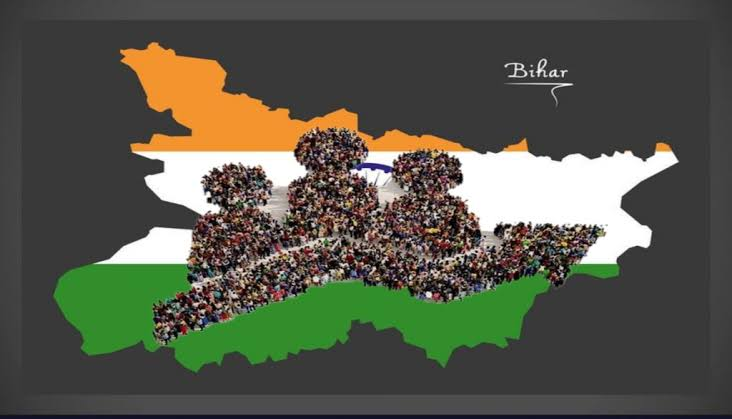

Overview
Bihar is one of the most populated states of India, located in the eastern part of the country. The state has a rich history, diverse culture and a large population living in rural as well as urban areas. Bihar has a population of more than 13 crore people and is divided into 38 districts. Major cities like Patna, Gaya, Muzaffarpur, Bhagalpur and Darbhanga play an important role in education, administration, business and tourism. Different languages such as Hindi, Maithili, Bhojpuri, Magahi and Angika are spoken in various regions of Bihar, showing the cultural diversity of the state.
A large part of Bihar's population depends on agriculture and related activities. The fertile land of the Ganga River supports farming of rice, wheat, maize and other crops. Bihar has a young population with many students and working people. In recent years, the state has focused on improving education, healthcare, employment, technology and infrastructure for better development. The people of Bihar are known for their traditions, festivals, hard work and contribution to India's history and growth.
Population Facts
| Category | Details |
|---|---|
| Total Population | 130+ Million |
| Population Rank | 3rd in India |
| Literacy Rate | 79.8% |
| Urban Population | 20% |
| Rural Population | 80% |
Key Features
- Youngest population among Indian states.
- Large workforce and human resources.
- Rapid growth in education sector.
- Increasing urbanization.